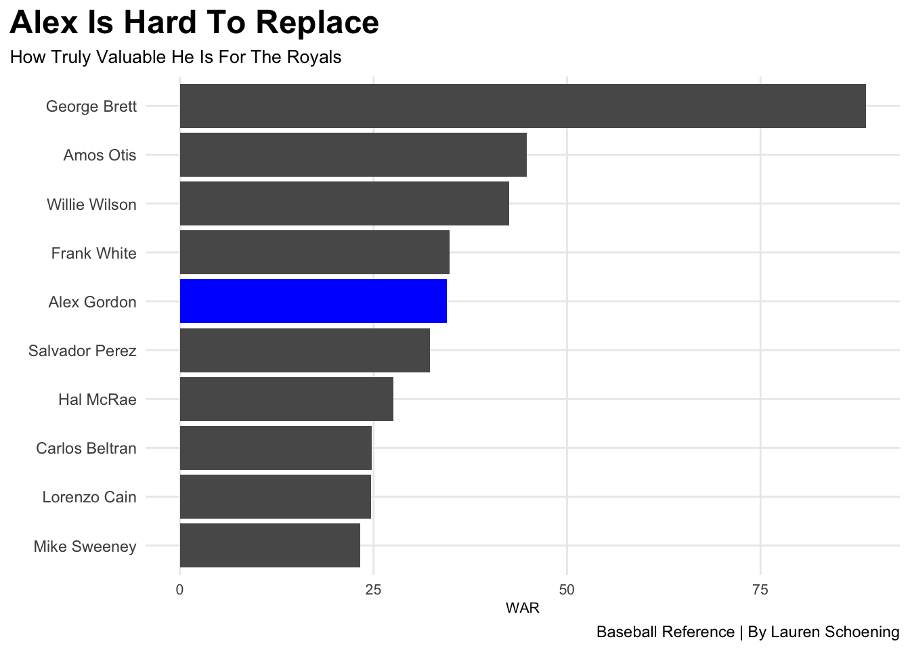
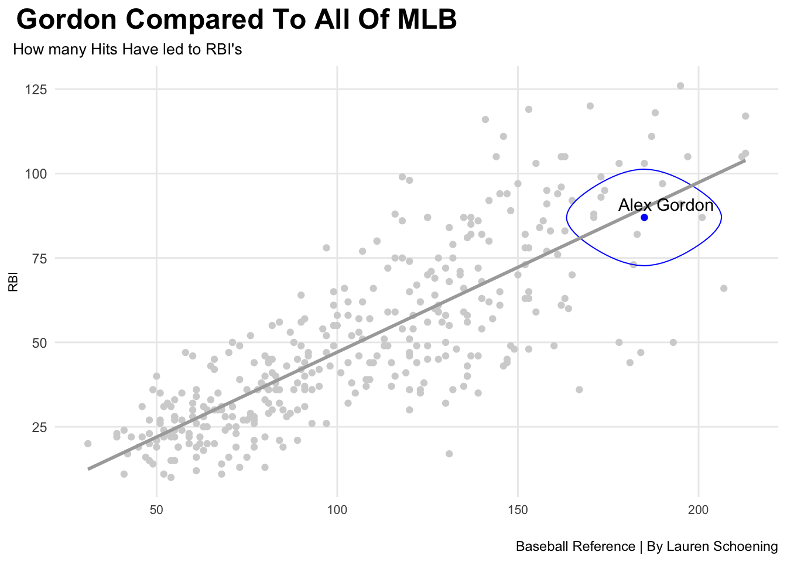
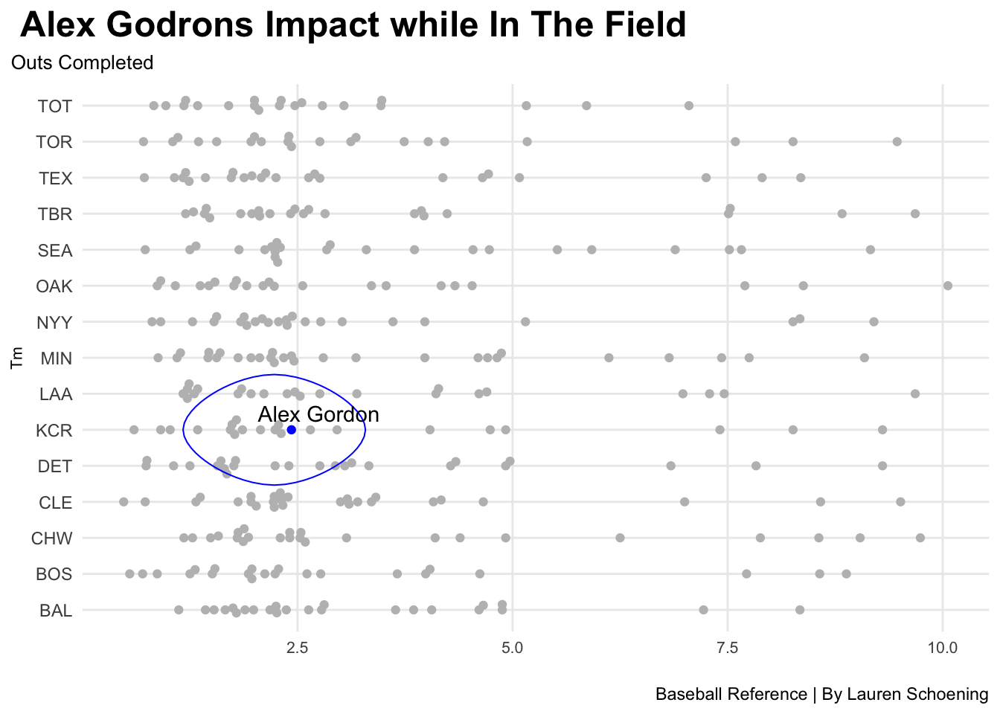

If your from Nebraska you have heard the name Alex Gordon. Alex was born and raised in Lincoln Nebraska and started playing baseball as a young kid. He continued his love of baseball and played for the University of Nebraska Lincoln as a well rounded player. From there he went to Major League Baseball.
Alex Gordon is loved in Nebraska, but does that mean he’s as good as Nebraskans make him out to be? Alex is so well known setting records at UNL as well as awards in the MLB receiving the Golden Glove Award eight times, the Fielding Bible Award four times, and the Wilson Defensive Player of the Year Award one time.
Alex was the fifth pick in the MLB draft he was picked up by the Royals and continued his whole career with them. There were times when he dropped down to the triple A league team the Storm Chasers. Here he was greeted with love and support until he went back to the Royals.
Overall he is a well rounded player succeeding in infield and outfield but there was never any key moments in the MLB that truly made him stand out. That leads to the question if it’s because he’s an outfielder or was there nothing other then him being from Nebraska that makes him stand out to us.Should be belong in the Hall of Fame or is he just a famous name?
Three graphs have been put together to see if he really does stand out. These statics will show him and the rest of the MLB players. Some similar to him others not.
Code
library(tidyverse)library(ggbeeswarm)library(ggrepel)library(ggalt)career<-read_csv("Career.csv")alltime <-read_csv("alltime.csv")allhits <-read_csv("allhitters2011.csv")teamfield <-read_csv("TeamFielding.csv")alex <- alltime %>%filter(Players =="Alex Gordon")ggplot() +geom_bar(data=alltime, aes(x=reorder(Players, WAR), weight=WAR)) +geom_bar(data=alex, aes(x=reorder(Players, WAR), weight=WAR),fill="blue") +coord_flip() +labs(title ="Alex Is Hard To Replace",subtitle ="How Truly Valuable He Is For The Royals",caption ="Baseball Reference | By Lauren Schoening",x ="",y ="WAR") +theme_minimal() +theme(plot.title =element_text(size =18, face ="bold"),axis.title =element_text(size =8),plot.subtitle =element_text(size =10),panel.grid.minor =element_blank(),axis.text.x =element_text(size =8),plot.title.position ="plot" )

WAR stands for Wins Above Replacement. His value in all areas of the game puts him at a pretty average spots when it comes to the chance of a replacement level player stepping in. In this graph there are some of the most known names the Royals have had on their team. George Brett clearly stands out but when looking at this graph Alex is in a solid middle spot showing his value pretty clear.
Code
hits <- allhits %>%filter( AB >200)alexhits <- hits %>%filter(Name =="Alex Gordon")ggplot() +geom_point(data=hits, aes(x=H, y=RBI), color ="light grey") +geom_point(data=alexhits, aes(x=H, y=RBI), color="blue") +geom_encircle(data=alexhits, aes(x=H-.10, y=RBI), s_shape=.2, expand=.012, color="blue") +geom_smooth(data=hits, aes(x=H, y=RBI), method="lm", se=FALSE, color="dark grey") +geom_text_repel(data=alexhits, aes(x=H, y=RBI, label= Name)) +labs(title=" Gordon Compared To All Of MLB",subtitle =" How many Hits Have led to RBI's ",caption ="Baseball Reference | By Lauren Schoening",x="",y="RBI") +theme_minimal() +theme(plot.title =element_text(size =18, face ="bold"),axis.title =element_text(size =8),plot.subtitle =element_text(size =10),panel.grid.minor =element_blank(),axis.text.x =element_text(size =8),plot.title.position ="plot" )

This shows all batters in the 2011 season, how many of their hits led to an RBI. Alex is higher on this list showing almost 200 hit. He is above average and this represents that he is a sucssesful hitter, making him a key batter on the Royals lineup.
Code
set.seed(1234)field <- teamfield %>%filter( G >20& Inn >40&is.na(Name) ==FALSE) %>%filter(Lg =="AL")ag <- field %>%filter(Name =="Alex Gordon")ggplot() +geom_beeswarm(data=field, aes(y=Tm, x=`RF/9`), groupOnX=FALSE, color="grey") +geom_beeswarm(data=ag, aes(y=Tm, x=`RF/9`), groupOnX=FALSE, color="blue") +geom_encircle(data=ag, aes(x=`RF/9`-.2, y=Tm), s_shape=.02, expand=.001, colour="blue") +geom_text_repel(data=ag, aes(x=`RF/9`, y=Tm, label= Name)) +labs(title=" Alex Godrons Impact while In The Field",subtitle ="Outs Completed",caption ="Baseball Reference | By Lauren Schoening",x="",y="Tm") +theme_minimal() +theme(plot.title =element_text(size =18, face ="bold"),axis.title =element_text(size =8),plot.subtitle =element_text(size =10),panel.grid.minor =element_blank(),axis.text.x =element_text(size =8),plot.title.position ="plot" )

This is where things start to get interesting. Here is all of the MLB players and the number of outs and assists they have had per nine innings. Alex is on the lower side for the Royals but still is not in a bad position compared to other players on his team.